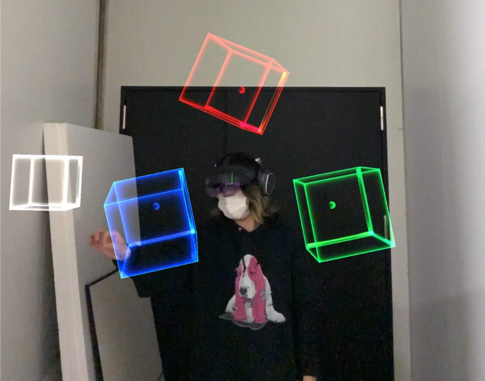
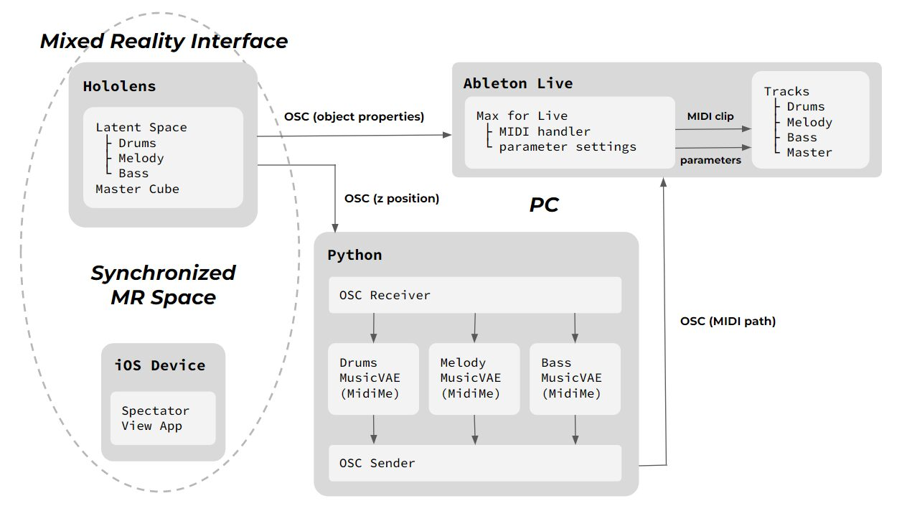
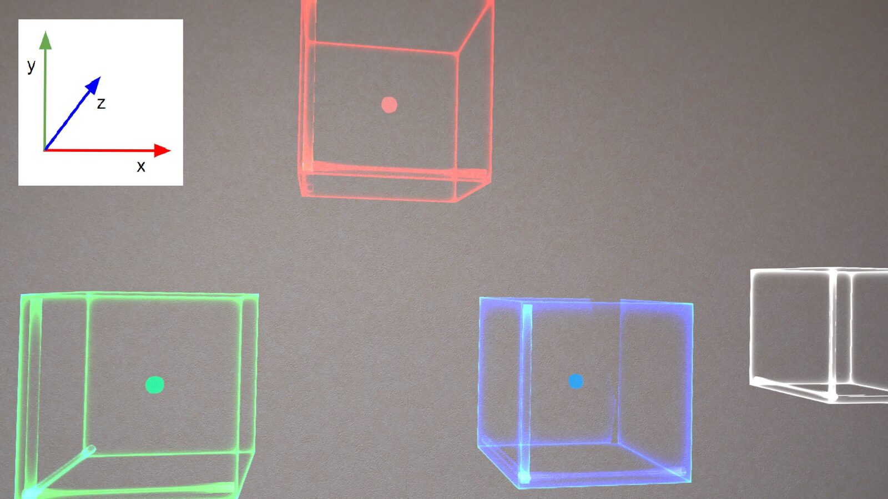
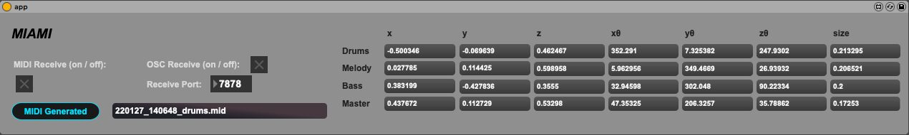

MIAMI: A Mixed Reality Interface for AI-based Music Improvisation
Abstract
In this research, we created a mixed reality interface and system for improvisation with deep generative music models, named MIAMI, which stands for "a Mixed reality Interface for Ai-based Music Improvisation". This was achieved by linking a 3D interface using Microsoft Hololens1, a Python2 program that loads and executes generative models, Ableton Live3 which is a Digital Audio Workstation (DAW), and a Max for Live4(M4L) device running on it. By incorporating the interface itself into the live space, we are able to achieve physical movements and visual augmentation that were not possible in conventional improvisational performances using music generation interfaces, demonstrating the possibility of a new musical experience.
Author Keywords
mixed reality, HoloLens, Unity, Deep Learning, Variational Autoencoder, music generation, music improvisation, Max, Ableton Live
CCS Concepts
•Applied computing → Sound and music computing; Performing arts; •Human-centered computing → Mixed / augmented reality;
Introduction
In recent years, various music generation algorithms and services have been developed. The source codes of the programs have been released for use by general users or provided as web applications or plug-ins running on DAWs. However, their interfaces are usually Character User Interfaces (CUIs), which execute generation by typing commands, or Graphical User Interfaces (GUIs), which can be operated on the web or on a DAW. When improvising with generative music models and without other instruments or physical devices such as samplers, turntables, etc., the performer only needs to operate the GUI on the PC screen to complete the performance. A performance using a musical instrument or a physical device requires physical movements that can be easily recognized by the audience. Therefore, performance on a GUI with few physical movements is considered to be inferior to such a performance with other musical or physical devices. Capra et al.[1] showed that visual augmentations in Digital Musical Instruments (DMIs) can enhance the audience's comprehension of the performance and improve the music listening experience. From these results, we thought that the expressiveness and comprehensibility of the performance could be improved more than before by expanding the interface of the performance to a 3D space and incorporating the interface itself into the live space, rather than keeping it on a flat screen just in front of the performer.
Along with AI, XR (Extended Reality, Cross Reality) has been developing in recent years, and XR can be further subdivided into VR (Virtual Reality), AR (Augmented Reality), and MR (Mixed Reality). VR is a technology that allows users to experience an immersive virtual space by wearing a Head Mounted Display (HMD), while AR augments the real world by superimposing virtual objects or sounds on the real space. In addition, MR combines both of these characteristics, merging the physical and digital worlds to enable natural and intuitive 3D interaction between humans, computers, and the environment[2]. Hololens is an MR device that can perform spatial recognition, hand tracking, display holograms, etc. Applications that run on Hololens can be developed with game engines such as Unity5 or Unreal Engine6. Furthermore, objects in the MR space, which can normally only be viewed through the Hololens screen, can also be viewed in real-time by the audience through an AR application created with a product called Spectator View7 provided by Microsoft (Fig.1). By using this MR technology to create an interface for music generation, it is possible to add physical movements to the performance. Moreover, in MR, the interface itself is developed in 3D as a visual augmentation to create a live space, which we believe will also contribute to the expansion of music experience.


Figure 1: Audience view of the interface.
Related Works
Related research will be introduced based on three perspectives.
Music Improvisation with AI (without any other musical instruments)
Many AI-based improvisations involve the use of other instruments or physical devices. In this section, we will introduce some examples of performances with AI and without using such devices. MASOM[3] is a software for live performance that uses Markov models trained on audio data to improvise. It can be used as a stand-alone performance, but can also be combined with human performance using other devices or multiple MASOMs. In the performance video released by the author8, two MASOMs and one human are performing. If one MASOM was performing by itself, the performance would be very simple, with very few physical movements. In addition, there is no visual augmentation, so we think that implementing that would help improve the audience's comprehension. Tanaka et al.[4][5][6][7][8] have developed various systems that play music from gestures using methods such as regression, classification, Markov models, neural networks, and reinforcement learning. In [6], the user wears a muscle sensing device and gesture information is dynamically mapped to synthesizer parameters by machine learning to enable performance. In this system, the gestures themselves are directly related to the performance, so many physical movements exist. On the other hand, since there is no interface that the performer can directly control, there is room for visual augmentation to supplement the audience's comprehension of the performance.
MR Interface for Music / Sound Design
Drawing sound in MR space[9] is an audiovisual project that draws a line of sine wave sound in the air with MR. The height of the sound is proportional to the vertical axis coordinates of the real space, so the higher the position, the higher the sound, and the lower the position, the lower the sound. This work is similar to our research in that it places an object in space and changes the sound it makes depending on its position. However, it is rather a work of sound design in space, while this research is different in that it aims to improvise organized music. Avatar Jockey[10][11] is a project that aims to expand the live space itself by placing dancing avatars that play musical phrases in the MR space. This work is more musical than the aforementioned examples in that it deals with phrases rather than sounds alone. However, there are only 15 types of phrases that can be assigned to the avatar (three phrases for each of the five instruments), limiting the performance’s musical range.
Deep Generative Music Models and Interactive Interfaces
In recent years, a number of deep learning models for music generation have been developed by various researchers. Many of them are based on Recurrent Neural Network (RNN), Variational Autoencoder (VAE), Generative Adversarial Network (GAN), or Transformer architectures[12]. Among them, VAE[13] is an architecture trained to compress the feature representation by pairing an encoder and a decoder. The original data can be retrieved by passing the decoder a specific value with the same number of dimensions as the latent space. MusicVAE[14] is a derivative of VAE for music and is used as a generative model in the interfaces described below. A variety of pre-trained models are available from Google Magenta9, including melody, drums, and multi-track with those two and bass. In addition, MidiMe[15] is a small MusicVAE that is created within the latent space of a MusicVAE, which has been trained with a variety of feature representations based on millions of datasets. Since MidiMe learns feature representations specific to that dataset, the number of latent dimensions is reduced compared to the original MusicVAE.
Instead of just pressing a button once to generate music, Roberts et al.[16] developed a web application10 that explores 2-bar melody loops and rhythmic patterns with the MusicVAE latent space to generate music in real-time while interacting with the user. With this interface, various musical sequences can be played continuously by moving points representing latent space coordinates. Tokui[17] has released an M4L device that can train a VAE of rhythm patterns and generate them on Ableton Live. While the original MusicVAE used LSTM[18] for the encoder and decoder, this one only uses fully-connected layers to reduce the size of the model so that it can be trained quickly on the CPU. As with [16], an interface is provided to explore the latent space of the VAE.
In this research, we used MidiMe to compress the latent space of the original MusicVAE into three dimensions in order to perform exploration such as [16] [17] in the MR space, and created an MR interface based on it.
System Design
MIAMI is composed of four major modules: an MR interface using Hololens, a Python server for music generation, Ableton Live for final sound output, and Spectator View for sharing the MR space with the audience (Fig.2).
Demo videos are available online11.


Figure 2: Overview of the whole system.
MR Interface
The MR application for MIAMI was developed with Unity. The three cubes in the center represent the latent spaces of MusicVAE, and each is assigned a different instrument (Fig.3). We collectively name them "Latent Spaces". Red is for melody, green for drums, and blue for bass. Inside each cube, there is a small sphere, which represents the latent coordinate used as an input vector for the decoder of the corresponding VAE model. You cannot manipulate this sphere directly, but instead, you can change its relative coordinates by moving the cube. By releasing the cube, the x,y,z relative coordinates of the sphere are passed to the MusicVAE decoder in the Python server through the OSC (Open Sound Control)12 communication protocol, resulting in the output of a generated MIDI sequence.


Figure 3: Player view of the interface. The axis info in the top-left is not displayed in the actual scene.
The white cube on the right is named "Master Cube," and is mainly responsible for the overall volume, filter adjustment, and changing chords or some effects. Each cube has a marker for its axis of rotation (in Fig.3, three thin cylinders extending from the bottom left of the cube), and they differ slightly in color and brightness. The MR objects themselves can be moved freely by moving your hand close to the hologram and pinching it. Or they can also be manipulated by focusing the beam from your palm on an object and pinching it, even if it is far away. It is also possible to change their sizes by grabbing a single object with both hands. The absolute coordinates, rotation angle, and size values of each object are sent directly to the M4L device, not to the Python server. These values are assigned to parameters in Ableton Live, which can be manipulated via the MR interface. You can also adjust the effects and other parameters by hitting the Master Cube against each Latent Space or a real-world object that is spatially recognized by Hololens. The table below shows which values of the objects are assigned to which parameters in Ableton Live (Fig.4). In addition, you can create pseudo-3D sounds by assigning volumes to the perspective (z coordinate), and panning to the left and right (x coordinate). The coordinates within 0.5 meters from the user's position are treated as their initial value to prevent the parameters from being changed unintentionally when the latent coordinates or angles are manipulated. If you want to change them, move the object at least 0.5 meters away from the user’s position. The x-axis rotation was not assigned due to the difficulty in Unity's rotation angle calculation specification.
Figure: 4 | ||
Object | Parameter on Ableton Live | |
|---|---|---|
Red Latent Space | x position | melody panning |
y position | melody pitch shift | |
z position | melody volume | |
x rotation | - | |
y rotation | dry/wet of a melody effect | |
z rotation | dry/wet of a melody effect | |
size | melody filtering | |
Green Latent Space | x position | drums panning |
y position | - | |
z position | drums volume | |
x rotation | - | |
y rotation | drums delay time | |
z rotation | drums delay time | |
size | drums filtering | |
Blue Latent Space | x position | bass panning |
y position | bass pitch shift | |
z position | bass volume | |
x rotation | - | |
y rotation | bass delay time | |
z rotation | bass delay time | |
size | bass filtering | |
Master Cube | x position | - |
y position | - | |
z position | master volume | |
x rotation | - | |
y rotation | on/off of a chord | |
z rotation | on/off of a chord | |
size | master filtering | |
hit the red cube | dry/wet of a melody effect | |
hit the green cube | dry/wet of the drums delay | |
hit the blue cube | dry/wet of the bass delay | |
hit anywhere else | on/off of a chord | |
Generative Models / Python Server
This section describes the generative models for melody, drums, and bass used in MIAMI. For each part, a MidiMe model is trained based on the original pre-trained MusicVAE13. The "cat-mel_2bar_big" model is used for melody, and the "cat-drums_2bar_small" model is used for drums. For bass, we used the "hierdec-trio_16bar" model, which includes bass along with other parts, since there was no bass-only pre-trained model available. MidiMe differs from the LSTM-based MusicVAE in that it consists of only fully-connected layers. Training data are compressed into latent dimensions (256 for drums, 512 for melody and bass) by passing it through the original MusicVAE encoder, and MidiMe uses the compressed data to train a smaller MusicVAE. The latent dimension of MidiMe is set to 3 so that it can be manipulated in 3D MR space. Mean error square loss is used as the loss function. For the training data, we used 10000 MIDI files randomly sampled from the original MusicVAE for each part. In order to implement MidiMe, we referred to [19] which is a Python version of the MidiMe code since the official one published by Google Magenta14 was only available in JavaScript.
In actual use, the models are loaded by running a Python program, and the OSC server is launched to receive data from the Hololens side at any time. The 3D coordinates sent by the Hololens are input to the decoder of the corresponding part (melody, drums, and bass) and a MIDI file will be generated. Once the generation is complete, the path of the MIDI file will be sent to the M4L device via OSC, and the generated sequences can finally be played on Ableton Live.
Ableton Live / M4L
The M4L device in Ableton Live (Fig.5) receives the MIDI file path from the Python server via OSC, and inserts it as a clip into the track of the corresponding part to play the sound. The clip plays back in a loop until the next sequence is generated. In addition to the latent coordinates, other data such as position, rotation, size, etc. are received directly from Hololens, and are assigned to the parameters listed in Fig.4.


Figure 5: Screenshot of the M4L device.
Spectator View
Spectator View was created as an iOS app according to the documentation15 provided by Microsoft. The app synchronizes with the Hololens MR space and displays its objects in real-time, so the audience can see how the performer is manipulating them in the MR space.
Discussion
Here we introduce several issues and limitations of this system that should be considered.
Hardware and Software
First of all, the hardware and software requirements are strict: Hololens is used as the MR device, and a Windows PC with Unity and Visual Studio16 is required to create the application. For training models, we used an Ubuntu machine with GPU for deep learning, and for the Python server and Ableton Live, we used a Mac PC because of its ease of environment setup. In this way, MIAMI is constructed using a variety of devices and software. As a future solution to this problem, if MR devices are supplied by more companies and their development platforms become more diverse, they may become cheaper and less dependent on the operating system or a limited number of software. As for training, since this is a lightweight model, it can be done on a normal CPU without much problem. Also, if you need more computing resources to improve the model in the future, GPU cloud services such as Google Colaboratory17 can be used.
Interface
In terms of the interface, it is difficult to visually see which effect or chord is being applied during the performance, considered as room for improvement. In addition, since this interface is digital and is shown to the audience, it could also serve as a Video Jockey (VJ) tool if the operations or music could be reflected in the interface as some kind of visual effect. However, due to the specifications of the device, high-quality images, or expressions with a large number of calculations are difficult to put into practice at this point. In Unity, there were some limitations in the software specifications. For example, only the x-axis rotation angle had a different representation from the other axes, so we decided to give up on assigning that parameter. This may be solved by using another development platform. Conversely, what was possible in Unity may that time become impossible.
Generative Models
As for the generative model, there is an issue that the accuracy of MidiMe is not high, so the characteristics of VAE are not fully utilized. In the latent space of VAE, those with close feature representations are mapped close to each other, so by continuously searching there, we can see how the output results gradually change. If the accuracy is low, different results will be generated for the same latent coordinates, and even if you find your favorite phrase, for example, you will not be able to reproduce it. Since the main focus of this project is on interface development, the models are based on the pre-trained MusicVAE and the MidiMe architecture announced by Google Magenta as they are. In the future, we will need to improve the training part to optimize it for 3D mapping. In addition, decoding is performed in real-time during the performance, and the larger the model size, the longer it takes to generate. Among melody, drums, and bass, drums are relatively lightweight and do not cause much delay, but the melody model is a little larger and has a slight time lag. As for the bass, since we used a 16bar Trio model that originally generates all three parts (melody, drums, and bass), it takes quite a lot of time to generate them in real-time at present. To improve this point, a MusicVAE model only with bass needs to be rebuilt. Also, the decoding part could be done on a powerful GPU machine to speed up other models as well.
Conclusion
By extending the interface of music generation through deep learning to 3D, MIAMI brought an unconventional physicality and visual augmentation to its improvisational performances. In recent years, XR and AI technologies have made remarkable progress, and as these technologies become even more widespread, it may become commonplace for us to mix virtual and real in our daily lives. MIAMI is one of the first steps in this direction, and we hope that the combination of XR and AI technologies will create the next level of value.
Ethics Statement
The interface of MIAMI is controllable by anyone with its hands after a little practice. Since the whole system requires various hardware and software such as Hololens, Unity, Python, Ableton Live, and Max for Live, financial and technical issues might occur when others try to replicate the project. This research includes a process of machine learning, which potentially has an environmental impact. The system consists of a pre-trained MusicVAE model released by Google Magenta, and a light MidiMe model trained by ourselves. The training time was a couple of minutes on an NVIDIA RTX A6000 graphics card. This research does not include studies with human participants. No animals were involved.
Footnotes
- ↩
- ↩
- ↩
- ↩
- ↩
- ↩
https://docs.microsoft.com/en-us/windows/mixed-reality/design/spectator-view
↩- ↩
- ↩
- ↩
https://youtube.com/playlist?list=PLsAlmsrRQsQ7yI5ZBjCYE151IL_fUHZyA
↩- ↩
https://github.com/magenta/magenta/tree/main/magenta/models/music_vae
↩https://github.com/magenta/magenta-js/blob/master/music/src/music_vae/midi_me.ts
↩- ↩
- ↩
- ↩
Citations
- ↩Capra, O., Berthaut, F., & Grisoni, L. (2020, July). All You Need Is LOD : Levels of Detail in Visual Augmentations for the Audience.
Microsoft Docs, “What is mixed reality?“, 2021, https://docs.microsoft.com/en-us/windows/mixed-reality/discover/mixed-reality
↩Tatar, Kıvanç & Pasquier, Philippe. (2017). MASOM: A Musical Agent Architecture based on Self-Organizing Maps, Affective Computing, and Variable Markov Models.
↩- ↩Caramiaux, B., & Tanaka, A. (2013). Machine Learning of Musical Gestures. 513–518.
- ↩Caramiaux, B., Donnarumma, M., & Tanaka, A. (2015). Understanding Gesture Expressivity through Muscle Sensing. ACM Trans. Comput.-Hum. Interact., 21(6). https://doi.org/10.1145/2687922
- ↩Tanaka, A., Di Donato, B., Zbyszyński, M., & Roks, G. (2019, June). Designing Gestures for Continuous Sonic Interaction.
- ↩Zbyszyński, M., Di Donato, B., & Tanaka, A. (2019, October). Gesture-Timbre Space: Multidimensional Feature Mapping Using Machine Learning & Concatenative Synthesis.
- ↩Visi, F., Tanaka, A., & Visi, F. (2020, March). Towards Assisted Interactive Machine Learning: Exploring Gesture-Sound Mappings Using Reinforcement Learning.
- ↩Tanaka, A., Di Donato, B., Zbyszyński, M., & Roks, G. (2019, June). Designing Gestures for Continuous Sonic Interaction.
- ↩Nakagawa, R., Komatsubara, R., Ota, T., Sonobe, K., Mitsumori, T., Hata, K., & Ohmura, H. (2019). Drawing Sound in MR Space. ACM SIGGRAPH 2019 Virtual, Augmented, and Mixed Reality. https://doi.org/10.1145/3306449.3328811
Fushida, M., & Hirabayashi, M. (2020). Avatar Jockey: Suggestion of Live Performance Space with Mixed Reality (In Japanese). In IPSJ Interaction 2020. http://www.interaction-ipsj.org/proceedings/2020/data/pdf/3A-02.pdf
↩Fushida, M., & Hirabayashi, M. (2021). Expansion of Expression System in Avatar Jockey (In Japanese). In IPSJ Interaction 2021. https://www.interaction-ipsj.org/proceedings/2021/data/pdf/2B19.pdf
↩- ↩Ji, S., Luo, J., & Yang, X. (2020). A Comprehensive Survey on Deep Music Generation: Multi-level Representations, Algorithms, Evaluations, and Future Directions.
- ↩Kingma, D. P., & Welling, M. (2014). Auto-Encoding Variational Bayes.
- ↩Roberts, A., Engel, J., Raffel, C., Hawthorne, C., & Eck, D. (2019). A Hierarchical Latent Vector Model for Learning Long-Term Structure in Music.
- ↩MidiMe: Personalizing a MusicVAE model with user data. (2019). In M. Dinculescu, J. Engel, & A. Roberts (Eds.), Workshop on Machine Learning for Creativity and Design, NeurIPS.
- ↩Learning Latent Representations of Music to Generate Interactive Musical Palettes. (2018). In A. Roberts, J. Engel, S. Oore, & D. Eck (Eds.), Proceedings of the 2018 ACM Workshop on Intelligent Music Interfaces for Listening and Creation, MILC@IUI 2018. http://ceur-ws.org/Vol-2068/milc7.pdf
- ↩Tokui, N. (2020). Towards democratizing music production with AI-Design of Variational Autoencoder-based Rhythm Generator as a DAW plugin.
- ↩Hochreiter, S., & Schmidhuber, J. (1997). Long short-term memory. Neural Computation, 9(8), 1735–1780.
- ↩Learning Latent Representations of Music to Generate Interactive Musical Palettes. (2018). In A. Roberts, J. Engel, S. Oore, & D. Eck (Eds.), Proceedings of the 2018 ACM Workshop on Intelligent Music Interfaces for Listening and Creation, MILC@IUI 2018. http://ceur-ws.org/Vol-2068/milc7.pdf
- ↩Learning Latent Representations of Music to Generate Interactive Musical Palettes. (2018). In A. Roberts, J. Engel, S. Oore, & D. Eck (Eds.), Proceedings of the 2018 ACM Workshop on Intelligent Music Interfaces for Listening and Creation, MILC@IUI 2018. http://ceur-ws.org/Vol-2068/milc7.pdf
- ↩Tokui, N. (2020). Towards democratizing music production with AI-Design of Variational Autoencoder-based Rhythm Generator as a DAW plugin.
Elvenson, 2020, SmallMusicVAE: An encoded latent space model for music variational autoencoder., https://github.com/Elvenson/midiMe
↩